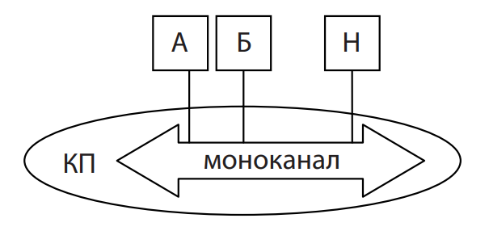
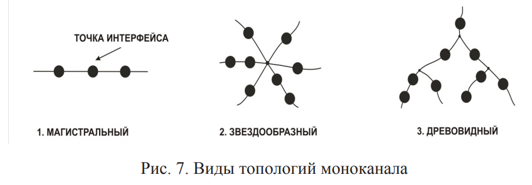
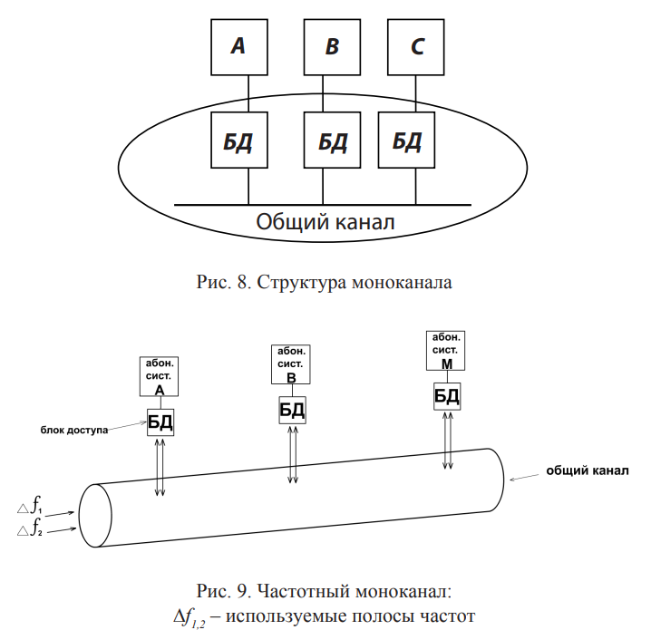

Моноканалом является коммуникационная подсеть, в которой любой блок данных, переданный АС, достигает, с точностью задержки распространения в ней сигналов, одновременно всех 8 АС. Моноканал построен на основе общего канала, к которому через специальные устройства подключаются все абонентские системы сети (рис. 6).
Принципиальным отличием моноканальных подсетей от других является наличие только одного пути между любыми двумя абонентскими системами. Этот признак определяет три вида топологии моноканала, представленные на рис. 7.
Моноканал состоит из двух частей: общего канала и его оконечных устройств – блоков доступа (БД), которые необходимы для стыковки абонентских станций с моноканалом в точках его интерфейса (рис. 8). Выбор физических средств, на основе которых строится моноканал, зависит от предъявляемых к нему требований: скорости передачи сигналов; надежности работы; стоимости. Моноканалы делятся на 2 вида – физический и частотный. В первом возможна одновременная передача только одного сигнала, а во втором за счет создания частотных полос одновременно передается группа сигналов: в каждой полосе по сигналу 9 (рис. 9). Физический моноканал используется в локальных компьютерных сетях, а на основе частотного моноканала работают системы телерадиовещания, радиотелефонной связи.
Для повышения скорости передачи данных по физическому моноканалу применяются два подхода: • создание в одном моноканале нескольких общих каналов; • создание иерархии моноканалов. В первом случае производится передача информационных блоков по различным логическим каналам, организованным путём использования для передачи канальных сигналов различных временных интервалов, кодовых последовательностей, видов поляризации, а блоки доступа станций осуществляют селекцию 10 их и объединение в один общий информационный поток. Такой подход применяется, например, в системах спутниковой связи, цифровых системах мобильной радиотелефонной связи GSM и CDMA, системах абонентского доступа к сетям передачи данных на основе технологии xDSL. Построение иерархической структуры моноканалов широко применяется в локальных сетях. Такой подход позволяет путём использования ассоциативных систем разделить трафик относительно независимых групп пользователей, и таким образом существенно увеличить общую производительность сети.